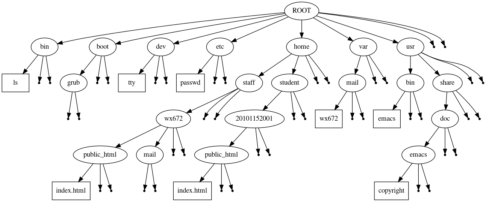

Play With Bash
Table of Contents
1 Basic Commands and Concepts
1.1 Understanding The File System

1.2 Must Known Commands
## Where I am? pwd ## What's in current directory? ls ## Get into some other directory cd /usr/share/doc # and see what's in it: ls # Now, go home cd ## I want to have a new folder for my homework mkdir homework; ls # Now, get into this newly created directory cd homework; ls ## Write a c program: cat > hello.c #include<stdio.h> int main(){ printf("Hello, world!\n"); return 0; } # Now, type "Ctrl-d" to quit. Then... ls # Compile it gcc hello.c -o my-hello ls # run it ./my-hello ### Here is a more easy way to say "Hello, world": echo Hello, world
The commands you've learnt so far
pwd, ls, cd, mkdir, cat, gcc, echo
Now let's have some more…
## To change a file name mv hello.c hello1.c ls ## To make a copy cp hello1.c hello2.c ls ## To remove a file rm hello1.c ls ## To see what's in a file cat hello2.c # or less hello2.c # or more hello2.c ## To edit a file nano hello2.c # or vim hello2.c # or emacsclient hello2.c
nano, vim, and emacs are the most commonly used editors in Linux.
To read the manual of a command
man ls man mv man rm man cp man man
To find out something about music player
man -k music player
The commands you have seen
pwd, ls, cd, mkdir, cat, gcc, echo mv, cp, rm, less, more nano, vim, emacs man
If you want to survive in the terminal, you have to be happy with all the above commands.
And there are a lot more to know if you want to be a hacker.
chmod, chown info, help file, type, which, whereis ln, wc, sort, uniq ps, w, top, free, du, df ssh, scp grep, find, pipe tar, gzip, 7z diff, patch
and still more…
1.3 CLI shortcuts
- Ctrl-a: beginning of line
- Ctrl-e: end of line
- Ctrl-f: forward
- Ctrl-b: backward
- Ctrl-n: next
- Ctrl-p: previous
- Ctrl-r: reverse search
- Ctrl-u: cut to beginning
- Ctrl-k: kill (cut to end)
- Ctrl-y: yank (paste)
- Ctrl-d: delete a character
- TAB: magic key
1.4 ">", ">>" — Output to a file
## To show the current time and date on the screen, you can do: date # What if you do: date > file1 # See nothing on screen? Check what's in 'file1': cat file1 # Now you see '>' is for outputting to a file ## To show a string on the screen, you can do: echo Hello, world # See "Hello, world"? Now, do: echo 'Hello, world!' >> file1 cat file1 # Now you see '>>' is for appending to the end of a file echo 'Hello again, world!' >> file1 cat file1
1.5 cat — concatenate files
## To see what's in a file: cat file1 ## To output to a file: cat file1 > file2 cat file2 ## What does the following command do? cat file1 file2 ## To append to a file: cat file1 >> file2 cat file2 ## To write into a file: cat > file2 # type 'Ctrl-d' on a new line to quit. cat file2 ## What does the following command do? cat >> file2
1.6 Wildcard characters
## Still following me? If so, you should have 4 files in your 'homework' directory right now ls # you should see # file1 file2 hello hello2.c # Right? ## Now, do... mkdir f h ls # Now, you should see 2 newly created directories 'f' and 'h', right? mv fi* f; mv he* h ls ls f ls h ls -R
See what's happened?
- "
*" is a special character means "any number of any characters" "
fi*" means every file starting with "fi" in its name. For example,file,file1,file2,fileanything, they all match "fi*"
Now you don't have problem with the "
he*", right?- "
?" is another wildcard char means "any one character". For example, still in yourhomeworkdirectory, you can create some more files with the following command,
touch fa fb fc faa fbb fcc faaa fbbb fccc # Now, you have 9 new empty files created. If you do ls f? # you can only see 'fa', 'fb', and 'fc'. If you do ls f?? # you can only see 'faa', 'fbb', and 'fcc'. # Got the idea? Now, tell me what the following commands do mkdir f-test mv f? f?? f??? f-test
1.7 Understanding ls -l
-rw------- 1 sam sam 57 Apr 17 1998 weather.txt drwxr-xr-x 6 sam sam 102 Oct 9 1999 web_page -rw-rw-r-- 1 sam sam 27648 Feb 11 20:41 web_site.tar -rw------- 1 sam sam 574 Dec 16 1998 xmas_file.txt ╷────┬──── ╷ ─┬─ ─┬─ ──┬── ─────┬────── ──────┬────── │ │ │ │ │ │ │ │ │ │ │ │ │ │ │ File Name │ │ │ │ │ │ │ │ │ │ │ │ │ └─── Modification Time │ │ │ │ │ │ │ │ │ │ │ └──────────── Size (in bytes) │ │ │ │ │ │ │ │ │ └───────────────── Group │ │ │ │ │ │ │ └───────────────────── Owner │ │ │ │ │ └──────────────────────── Number of hard links │ │ │ └────────────────────────────── File Permissions │ └─────────────────────────────────── File types
1.7.1 File types
- "
d" — directory - "
-" — regular file - "
l" — soft link - "
c" — character device - "
b" — block device - "
s" — socket - "
p" — named pipe (FIFO)
1.7.2 File modes
drwxr-xr-x 2 wx672 wx672 4096 Sep 26 17:59 f/ drwxr-xr-x 2 wx672 wx672 4096 Sep 26 20:49 f-test/ drwxr-xr-x 2 wx672 wx672 4096 Sep 26 18:00 h/ └┼┘└┼┘└┼┘ │ │ │ │ │ │ │ │ └─── Other's permission │ └────── Group's permission └───────── Owner's permission
- "
rwx" — readable, writable, executable - "
r-x" — readable, not writable, executable - "
r--" — readable, not writable, not executable - "
---" — not readable, not writable, not executable
chmod— change file modeschmod 777 f && ls -l f chmod 700 f && ls -l f chmod 600 f && ls -l f chmod 000 f && ls -l f chmod 755 f && ls -l f chmod a+rwx f && ls -l f chmod a-rwx f && ls -l f chmod go-rwx f && ls -l f chmod u+x f && ls -l f
Know the meanings of the numbers
rwx rwx rwx rwx --- --- rwx r-x r-x rw- r-- r-- 111 111 111 111 000 000 111 101 101 110 100 100 ─ binary ─── ─── ─── ┃ ─── ─── ─── ┃ ─── ─── ─── ┃ ─── ─── ─── 7 7 7 7 0 0 7 5 5 6 4 4 ─ decimal
1.8 Shell variables
echo $PATH echo $PWD echo $HOME echo $USER
"$" — Get the value of the variable. For example,
- "
$a" is to get the value of variable "a"; - "
$PATH" is to get the value of variable "PATH".
1.8.1 PATH
echo $PATH # Assign a new value to PATH PATH="./:$PATH" echo $PATH
1.9 Background and foreground jobs
## To run a command in the background emacs & google-chrome & ## Show background jobs: jobs ## To push a foreground process into background # 1. type 'Ctrl-z' to put it into sleep. Then, # 2. bg jobnumber. For example, bg 1
1.10 Special files
1.10.1 /dev/null — A black hole!
ls > /dev/null echo hello > /dev/null ## You can output error messages into '/dev/null'. ## For example, if you do cat no-this-file # you will see an error message saying: # cat: no-this-file: No such file or directory # If you do cat no-this-file 2> /dev/null # the error message will go into the black hole --- /dev/null. # learn more about /dev/null man null
1.10.2 /dev/zero — A zero generator
## To create a 1000KiB-sized empty file dd if=/dev/zero of=/tmp/testfile bs=1k count=1000 ## learn more about dd man dd
1.10.3 /dev/random — A random number generator
## to generate a random decimal number which is smaller than 1000. echo $(( `od -An -N2 -i /dev/random` % 1000 )) # learn more about /dev/random man 4 random
"
$((...))" — is for math calculation. For example,echo $((1+2))will give you "3".
"
`...`" — The things between the quote (`) pair must be commands. For example,echo `ls`
The output of "
ls" will be passed toecho.
1.11 Pipe — Chaining commands together
man ls | head man ls | head | tail -3 cat file1 | head -20 | tee file5
1.12 Single-quotes and double-quotes
a=alpha; b="$a"; c='$a' echo a b c echo $a $b $c echo '$a $b $c' echo "$a $b $c"
- The special character between single quotes ('…') will be printed as it is.
- The special character between double quotes ("…") will be expended by bash.
1.13 Soft links and hard links
Still in your homework directory, do:
cd f-test; ls
You should see the 9 useless files sitting there, right?
Now, let's make a symbolic link of file fa, do:
ln -s fa fA && ls -l f?
You should see something like this:
-rw-r--r-- 1 wx672 wx672 0 Sep 26 20:49 fa lrwxrwxrwx 1 wx672 wx672 2 Sep 27 18:45 fA -> fa
This means fA is a symbolic link of fa. Now do:
echo I am fa > fa # write something into 'fa' cat fA
Got the idea? A symbolic link (or soft link) is just like another name of a file.
Now, let's try a hard link
ln fa fAA; ls -li fa fA fAA
You should see:
8916937 -rw-r--r-- 2 wx672 wx672 8 Sep 26 20:49 fa 8916955 lrwxrwxrwx 1 wx672 wx672 2 Sep 27 18:45 fA -> fa 8916937 -rw-r--r-- 2 wx672 wx672 8 Sep 26 20:49 fAA ───┬─── ┬ ┬ │ │ │ │ │ └─── File size │ └───────────────── Number of hard links └───────────────────────────────── Inode number
A file is like a person
- Every people can have a lot of names, but he can have only one unique ID number.
- Every file can have a lot of names, but it can have only one unique ID number.
faandfAAare the same file, whilefAis another file linking tofa.
1.14 finding a file
## Within your HOME directory (~), find a file named 'fa': find ~ -name fa ## In /etc directory, find all the directories that named "rc*" find /etc -type d -name "rc*" ## In your HOME, find all the files that named "*~", and delete them find ~ -name "*~" | xargs rm
1.15 grep — finding matching lines in files
## In file /etc/passwd, to find out the lines that have the string "stud" in it grep stud /etc/passwd ## What the following command do? man cp | grep -B2 -A2 recur # you can "man grep" to find out the answer.
1.16 Command alias
alias alias la='ls -a' alias rm='rm -i' which rm
1.17 STDIN, STDOUT, STDERR, and redirection (>, >>, <)
STDIN: keyboard inputSTDOUT: screen outputSTDERR: standard error, also output to screen
1.17.1 Redirect STDOUT to a file
## Rather than output to screen (~STDOUT~), you can output to a file. ## For example ls > listing ## In this case, the output of 'ls' is redirected to a file 'listing'. ## This is called "output redirection". ## More examples: cat listing > listing2 cat listing* > listing3 cat listing* >> listing3
1.17.2 Redirect STDIN from a file
Have you ever tried:
cat Hello, world! Ctrl-d
What happened is:
- After typing "
cat" followed byENTER,catstarts running, and expects your keyboard input (standard input); - You key in "
Hello, world!" (standard input); catreads from standard input (STDIN), and display it toSTDOUT;- You see another line of
Hello, world!on the screen (standard output); - You type "
Ctrl-d" to quit from input.
You don't have to always input from keyboard. For example,
cat < listing
In this case, rather than gets input from STDIN, cat gets input from a file
"listing". This is called "input redirection".
1: #!/bin/bash 2: while read LINE 3: do 4: case $LINE in 5: *root*) echo $LINE ;; 6: *stud*) echo $LINE ;; 7: *) echo "I don't care." ;; 8: esac 9: done < /etc/passwd
See "< /etc/passwd"? This means the small while loop gets input from the file
/etc/passwd.
1.17.3 Redirect STDERR into a file
If you do:
ls asfdsadsdasfdf
Most probably you will see an error message like this:
/bin/ls: cannot access 'asfdsadsdasfdf': No such file or directory
If you don't want the error message is displayed on the screen, you can save it to a file. For example,
ls asfdsadsdasfdf 2> errorlog cat errorlog
Usually, both STDERR and STDOUT are output to the screen.
If you do, for example,
ls sdadsdssdf / > log
- The content of the root directory (
/) will go into the file "log", while - The error message will be displayed on the screen.
- The content of the root directory (
If you want both
STDERRandSTDOUTgo into "log" file, you can do:ls sdadsdssdf / &> log
If you want only
STDERRgoes intologfile, you should do:ls sdadsdssdf / 2> log
1.18 Initial files (.bashrc, .bash_profile, .profile)
## to edit a initial file vim .bashrc ## to active the change source .bashrc # or . .bashrc
1.19 tar
tar is for archiving files
tar cvf myarchive.tar /etc/termcap /etc/passwd tar tvf myarchive.tar tar xvf myarchive.tar ## With compression: tar zcvf myarchive.tgz /etc/termcap /etc/passwd tar zxvf myarchive.tgz tar ztvf myarchive.tgz
1.20 gzip
gzip is for compressing files
gzip file1 zcat file1.gz gunzip file1.gz
1.21 Process info
ps
ps aux
top
top -b -n1 | grep bash
w
kill
1.22 System info
mount uname -a dmesg lspci lsusb lsmod
1.23 Job scheduling
# examples: at 11:00 at> date >> $HOME/date.out at> type CTRL-D to quit at -l man at crontab -e */2 * * * * date >> $HOME/date.out crontab -l man crontab
1.24 Networking
ifconfig,dhclient,ifup/down,ping,route,arp,netstatipssh,scp,rsync,nc,aria2ctcpdump,nmapiptables
2 Bash Programming Examples
2.1 Shabang
#!/bin/sh #!/bin/bash #!/usr/bin/python #!/usr/bin/php
2.2 for VAR in LIST; do SOMETHING; done
## Example 1: for ((i=1;i<6;i++)); do echo $i; done # or for i in 1 2 3 4 5; do echo $i; done # or for i in `seq 5`; do echo $i; done ## Example 2: for i in 1 2 3 4 5; do echo $((i*i)); done # or for ((i=1;i<6;i++)); do echo $((i*i)); done ## Example 3: for i in 1 2 3 4 5; do j=$((i*i)); echo $i $j; done # or for ((i=1;i<6;i++)); do j=$((i*i)); echo $i $j; done ## Example 4: #!/bin/bash for f in /home/students/* do du -cks $f | grep -v total done | sort -n | tail -10 ## Example 5: for f in *jpg do convert $f -resize 1280x \ -gravity center \ -crop 1280x768+0+0 \ `basename $f .jpg`-1280x768.jpg done
2.3 if TEST; then COMMANDS; else OTHERCOMMANDS; fi
2.3.1 Comparisons
## Example 1: if [ $a -lt 10 ]; then a=$(($a+1)); echo $a; else echo "a is too large."; fi # or if [[ $a -lt 10 ]]; then a=$(($a+1)); echo $a; else echo "a is too large."; fi # or if (("$a" < 10)); then a=$(($a+1)); echo $a; else echo "a is too large."; fi ## Example 2: #!/bin/bash # This is a simple string comparision script. # # 1. Use '[[' instead of '[' whenever possible. # 2. Don't use '[ ]' with '<', '>'. # 3. '-eq -le -ge -lt -gt' are for arithmetic comparisons # 4. '< >' for string comparisons # if [ -z "$2" ]; then echo Usage: $0 '<string1> <string2>' elif [[ "$1" > "$2" ]]; then echo $1 is bigger than $2. elif [[ "$1" = "$2" ]]; then echo $1 is equal to $2. else echo $1 is smaller than $2. fi ## Example 3: if [[ $(ls | wc -l) -gt 10 ]]; then echo "messy!"; else echo "clean!"; fi
2.3.2 Test exit status
#!/bin/bash for f in *.sh do if grep -q while $f; then echo "$f: while loop found\!" else echo "$f: no while loop." fi done
2.3.3 See your .bash_profile
# include .bashrc if it exists if [ -f ~/.bashrc ]; then . ~/.bashrc fi # set PATH so it includes user's private bin if it exists if [ -d ~/bin ] ; then PATH=~/bin:"${PATH}" fi
2.4 while CONDITION; do SOMETHING; done
while true; do mpg123 song.mp3; done # or while true; do mpg123 `find ~/ -iname "*.mp3"`; done
#!/bin/bash x=0 while [ $x -lt 10 ] # [ ] do y=$x while [[ $y -ge 0 ]] # [[ ]] do echo -n $y # no newline y=$((y-1)) # y-- done echo x=`echo "$x + 1" | bc` # x++ done
2.4.1 read — Read a line from STDIN
while read LINE; do echo "what I typed is: $LINE"; done
#!/bin/bash while read LINE do case $LINE in *root*) echo $LINE ;; *stud*) echo $LINE ;; *) echo "I don't care." ;; esac done < /etc/passwd
2.5 case VAR in PATTERN) COMMANDS ;; esac
#!/bin/bash printf "Play a game?" read YN case $YN in [yY]|[yY][eE][sS]) exec bb ;; *) echo "Maybe later." ;; esac
#!/bin/bash YN=yes printf "Play a game?[$YN]" read YN : ${YN:=yes} case $YN in [yY]|[yY][eE][sS]) exec bb ;; *) echo "Maybe later." ;; esac
2.6 Command line arguments ($0, $1, $2..., $#, $@)
An example C program:
#include <stdio.h> int main(int argc, char *argv[]) { int i; printf("You said:\n\t"); for(i=1; i<argc; i++) printf("%s ",argv[i]); printf("\n\n\targc = %d\n", argc); for(i=0; i<argc; i++) printf("\targv[%d] = %s\n",i,argv[i]); return 0; }
An equivalent bash script:
#!/bin/bash echo "You said:" echo -e "\t$@" echo echo -e "\targc = $#" echo -e "\targv[0] = $0" i=1 for arg in $@; do # printf "arg[$i] is %s\n" "$arg" echo -e "\targv[$i] = $arg" let i++ done
2.7 Arrays
Set random wallpaper:
#!/bin/bash ### demonstrate ARRAY and RANDOM ### files=($HOME/pics/2009summer/wallpapers/2009summer-1280x768/*.jpg) # get the length of array ${files[@]} n=${#files[@]} # get a random array element wallpaper="${files[RANDOM % n]}" # set it as wallpaper qiv -z $wallpaper
2.8 GUI
#!/bin/bash while NAME=`zenity --entry --text="Your name?"` do zenity --info --text="Hello, $NAME\!" done
2.9 /etc/init.d/*
Check files in /etc/init.d/ directory to see how shell scripts can be used seriously.